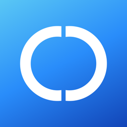

유리
URE · Unicode Reunion Engine
분해된 Unicode 파일 이름을 NFC로 바꿉니다.
macOS용 다운로드macOS 27 이상이 필요합니다. 처음 열 때 차단되면, 응용 프로그램 폴더의 유리를 우클릭하고 열기를 누르세요.
기능
- 파일과 폴더의 이름만 바꿉니다. 내용은 그대로 둡니다.
- 폴더 안까지 살펴보고, 적용하기 전에 미리보기를 보여 줍니다.
- 같은 이름이 이미 있으면 그 항목만 건너뛰고 나머지는 계속합니다.
- 방금 한 작업은 실행 취소할 수 있습니다.